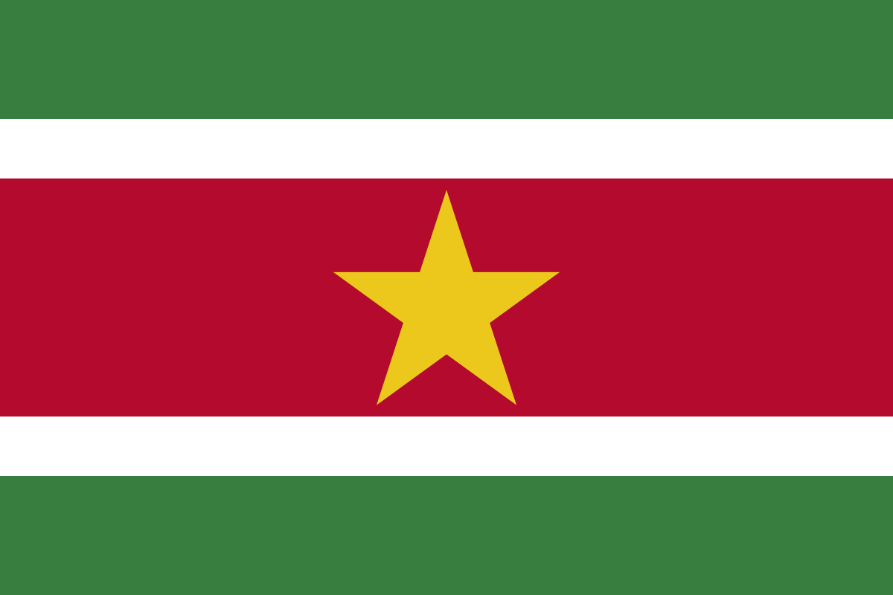
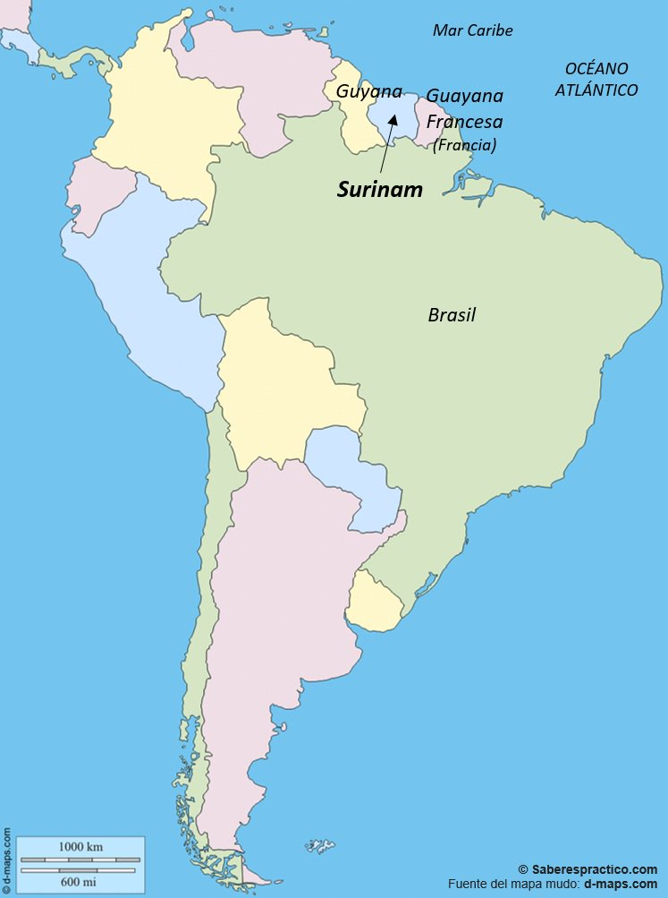

Surinam

Los holandeses ocuparon el territorio en 1581 y, durante la primera mitad del siglo XVII, negociantes ingleses colonizaron la región. En 1667, los británicos cedieron su parte a los holandeses a cambio de la Nueva Holanda (en América del Norte).
A comienzos del siglo XIX, después de las guerras napoleónicas, Gran Bretaña reconoció oficialmente a Surinam como propiedad de los Países Bajos. La esclavitud fue abolida en 1863, y numerosos inmigrantes venidos de India e Indonesia se establecieron en el territorio. En 1922, Surinam se volvió parte integrante del territorio de los Países Bajos, pero una nueva Constitución adoptada en 1954 le confirió una gran autonomía en el seno del reino.
El 25 de noviembre de 1975, el Parlamento holandés decidió acordar la independencia a Surinam, dotado de una constitución de tipo parlamentaria, y Henck Arron, hombre político de origen criollo, fue entonces el Primer Ministro. Una centena de miles de habitantes decidieron sin embargo conservar la nacionalidad holandesa y emigraron hacia los Países Bajos.
En febrero de 1980, Arron fue derrocado por un golpe de estado militar y el coronel Bouterse se instaló a la cabeza del país. Puso fin al régimen democrático y gobernó por decreto en tanto que comandante en jefe del ejército y presidente del centro político.
Sin embargo, la agitación social ganó a la población y la guerilla estalló en 1986, provocando una desestabilización de la economía nacional. El proceso de democratización fue simbolizado con la instauración de una nueva constitución, aprobada en 1987, que restauró un gobierno civil y organizó elecciones parlamentarias.
En enero de 1988, Ramsewak Shankar fue elegido presidente por la Asamblea Nacional, y Arron devino vicepresidente. Pero Bouterse continuó teniendo las riendas del poder y derrocó el gobierno de Shankar en diciembre de 1990.
Nuevas elecciones legislativas tuvieron lugar en mayo de 1991 y en septiembre del mismo año, Ronald Venetiaan devino presidente e impulsó al país hacia la firma de un acuerdo de paz con los rebeldes
Ubicación Geográfica

Surinam, el país más pequeño de Sudamérica, está situado sobre el escudo de la Guayana, coordenadas geográficas de Surinam en grados y minutos decimales: Longitud: O 56°0'0"
Coordenadas geográficas de Surinam en grados decimales:
Longitud: -56.0000000
Latitud: 4.0000000
Coordenadas geográficas de Surinam en grados y minutos decimales:Longitud: O 56°0'0"
Latitud: N 4°0'0"
País
Distancia
Coordenadas
Surinam
0 Km
N 4°0'0" O 56°0'0"
Guyana
351 Km
N 5°0'0" O 59°0'0"
Trinidad y Tobago
954 Km
N 11°0'0" O 61°0'0"
Barbados
1,091 Km
N 13°10'0.01" O 59°31'59.99"
Situación Económica
Suriname, en comparación con otros países de la región, ha disfrutado de un bienestar relativo durante el período después de la Segunda Guerra Mundial. Esto es evidente aun para el eventual visitante. El tamaño y la calidad de la mayor parte de las viviendas, el número de automóviles, camionetas, motocicletas y camiones. Todo ello atestigua la energía económica de este pueblo. De modo que cuando Suriname obtuvo su independencia en 1975, ya disfrutaba de un alto nivel de desarrollo. El producto nacional bruto per cápita en 1983 fue de $3,382.00.
No obstante, la prosperidad en Suriname es frágil. Ello se debe en gran parte a la excesiva dependencia de un recurso natural –-la bauxita (y en menor grado el aluminio) y de una industria, la minería y el procesamiento de estos minerales.
En los últimos años los bajos precios mundiales de la bauxita y sus derivados han tenido un impacto tremendo en la economía de Suriname. A esto debe añadirse la fuerte competencia extranjera especialmente de los países productores, donde la bauxita es considerablemente más fácil de explotar. Sin embargo, a pesar de estos problemas la industria de la bauxita emplea a 7.000 trabajadores y proporciona más del 80 por ciento de las divisas del país.
Para mejorar la comprensión de la realidad económica de Suriname, la misión especial de la CIDH visitó las plantas de aluminio llamadas Suralco y Billiton donde entrevistó tanto al personal administrativo como a los trabajadores.
La situación económica es ya muy difícil, pero los errores humanos han complicado los problemas. En 1982, luego de los asesinatos de 15 ciudadanos, el Gobierno de los Países Bajos suspendió un contrato de ayuda que había estado en vigor desde la independencia y que le aseguraba al país 110 millones de dólares por año durante 15 años –cerca del 50 por ciento del presupuesto nacional. Al mismo tiempo, el gobierno de los Estados Unidos suspendió la asistencia economía por valor de 1.5 millones de dólares por año.
La mala situación de la industria de la bauxita y la supresión de la ayuda externa han hecho que el Gobierno haya tenido que ajustar su programa económico nacional. El propio plan de desarrollo del gobierno para 1982-85 en su mayor parte no ha sido cumplido debido a la falta de reservas en moneda fuerte.
La tasa de desempleo se estimó en un 17 por ciento en 1980 y un 15 por ciento en 1982. No se dispone de las cifras de 1985, pero debido a la limitación de las importaciones, al cierre de algunos negocios, a la falta de divisas y a la deprimida industria, se puede suponer razonablemente que esta cifra actualmente es mucho más elevada, además del hecho que los empleados públicos gubernamentales ascienden al 42 por ciento de la fuerza laboral. La misma generalización puede hacerse con respecto al fenómeno del subempleo.
Organización Social
La población de Surinam es una rica mezcla de razas y personas de diferentes orígenes étnicos. Se estima que hay alrededor de 350.000 surinameses en el país y entre 150 y 200 mil viven en el extranjero, especialmente en Holanda. Aproximadamente el 31 por ciento de la población es "creole", o sea de extracción predominantemente africana; el 15 por ciento son indonesios javaneses; el 2 por ciento chinos; el 10 por ciento "Bush Negroes" llamados también "Maroons". Este último grupo desciende de esclavos escapados. Alrededor de 5.000 surinameses son Amerindios representando el 3 por ciento de la población. Por último, Suriname tiene una pequeña comunidad judía.
Las religiones que se practican en Suriname incluyen los principales credos cristianos, siendo las más numerosas la católica, la Iglesia Reformista Holandesa, y la Morava. También son extensamente practicados el Hinduismo, el Islamismo, el Judaísmo, el Confucionismo y el Animismo.
En general estos diferentes grupos raciales, étnicos y religiosos han convivido pacíficamente entre sí. Por ejemplo, uno se sorprende de ver un hermoso minarete musulmán al lado de una elegante sinagoga antigua en el centro de Paramaribo.
No obstante, como la Comisión lo indicará en su primer informe sobre Suriname, los partidos políticos anteriores a 1980 en su mayoría se centraban alrededor de las líneas étnicas raciales más que en las creencias políticas. Esto demostró ser el origen de la gran frustración política nacional.
Hay dos grupos que han sido algo abandonados en el examen de los derechos humanos de ese país: los "Bush Negroes" y los Amerindios.
Los "Bush Negroes" pertenecen ibus son los Patawai, Aluku, Paramaka y Kwinti, ascendiendo a unos 10.000 en total.
La misión visitó el pueblo Marooa seis tribus, la mayor son los Djukas y los Saramakas, que ascienden alrededor de 20.000 personas cada una. Las otras trndaron en 1965 cuando el Gobierno, junto con la Alcoa Aluminum Co., Construyó una gran represa y planta hidroeléctricena de Drietabbeje habitado por los Djukas. Los Saramakas son los más perjudicados ya que una gran parte de sus tierras se inunel Río Saramaka, obligando a 6.000 Saramakas a reinstalarse. Muchos de éstos se han mudado a la costa, especialmente a Paramaribo.
Los Amerindios de Suriname descienden de los habitantes originarios del área, son más de 10.000 y pertenecen a 13 grupos tribales. Las dos tribus más numerosas son los Caribs (43%) y los Arawaks (39%). Las tribus restantes más pequeñas son la Guayana, Trio, Wayarikule, Wama y Akuliyo. Durante su reciente investigación institución la misión especial de la CIDH visitó el pueblo de Trio de Tepoe.
Se estima que el 85 por ciento de la población de Suriname vive dentro de las 25 millas de Paramaribo. La gran mayoría de la población habita cerca de la costa del Océano Atlántico.
http://www.cidh.org/countryrep/Suriname85sp/Cap.8.htm